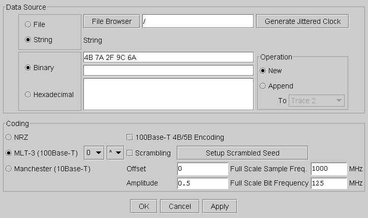
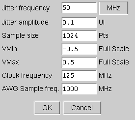

Binary Sequence Editor
This menu item is used for generating waveforms typically used in testing LAN or general communication devices.
Clicking this choice, opens up the following window.

In this window, you select:
- The data source (File or String).
- The encoding system of the data (binary or hexadecimal).
- The encoding system of the signal (NRZ, Manchester or MLT-3).
- The special codings if necessary for the test (4B/5B coding and Scrambling).
After selecting the above, you enter the binary sequence, which defines the waveform, and the signal parameters (offset voltage, peak voltage, bit frequency and sample frequency).
It is also possible to generate a clock modulated with jitter. This may be required for testing the tolerance of LAN devices to a signal containing jitter. To generate a clock with jitter click the Generate Jittered Clock button and the following window will appear. You can enter the necessary parameters in the respective fields:

This information must be subsequently downloaded by clicking the OK button and Download Waveform in the Signal Analyzer main window. The Apply button allows you to process a waveform without closing the editor.